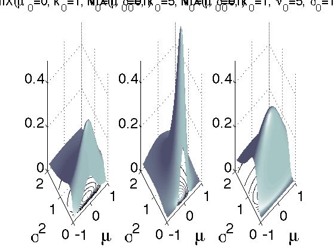

Compare various Normal Inverse Chi Squared Distributions
Contents
gaussInvChi Params
mu = [0 0 0];
k = [1 5 1];
v = [1 1 5];
S = [1 1 1];
Convert to gaussInvWishart models for plotting
modelA.mu = mu(1);
modelA.k = k(1);
modelA.dof = v(1);
modelA.Sigma = v(1)*S(1);
modelB.mu = mu(2);
modelB.k = k(2);
modelB.dof = v(2);
modelB.Sigma = v(2)*S(2);
modelC.mu = mu(3);
modelC.k = k(3);
modelC.dof = v(3);
modelC.Sigma = v(3)*S(3);
model = {modelA, modelB, modelC};
Plot
rangexy = [-0.9 1 0.1 2];
figure;
fs = 24;
for m = 1:numel(model);
fn = @(x)exp(gaussInvWishartLogprob(model{m}, x(:, 1), x(:, 2)));
subplot(1,3,m)
plotSurface(fn, rangexy);
hold on;
plotContour(fn, rangexy);
set(gca, 'zlim', [0 0.5]);
title(sprintf('%s(%s=%g, %s=%g, %s=%g, %s=%g)', 'NIX' , ...
'\mu_0' , mu(m) , ...
'k_0' , k(m) , ...
'\nu_0' , v(m) , ...
'\sigma^2_0' , S(m) ) , 'fontsize', 20);
xlabel('\mu', 'fontsize', 30);
ylabel(sprintf('%s', '\sigma^2'), 'fontsize', 30);
set(gca, 'fontsize', 24);
end
set(gca, 'fontsize', 24);
set(gca,'Color','w');
set(gcf,'Color','w');
printPmtkFigure(sprintf('NIXdemoBone'));
